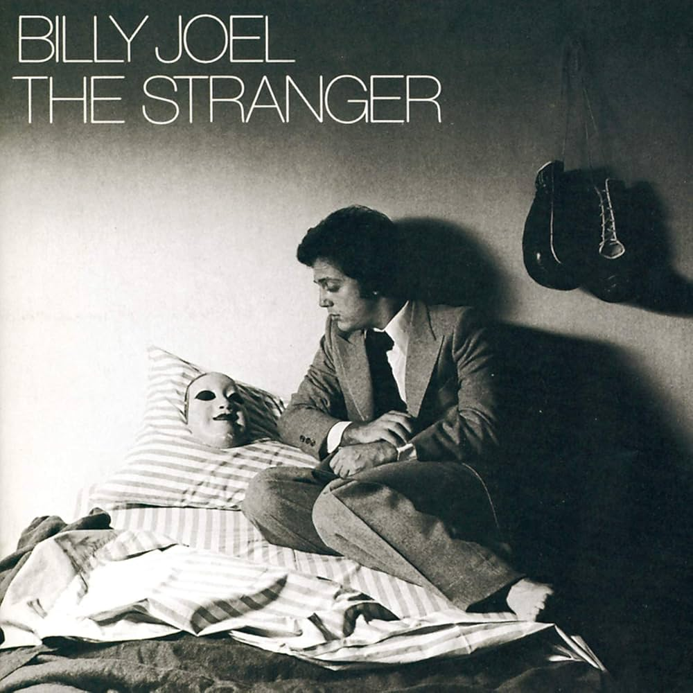

Playlists Page


Fleetwood Mac - Rumors
Billy Joel - The Stranger
Lauryn Hill - The Miseducation of Lauryn Hill
Fleetwood Mac - Rumors
(Album)
Songs
- Second Hand News - 2:43
- Dreams - 4:14
- Never Going Back Again - 2:02
- Don't Stop - 3:11
- Go Your Own Way - 3:38
- Songbird - 3:20
- The Chain - 4:28
- You Make Loving Fun - 3:31
...and more!
Billy Joel - The Stranger
(Album)
Songs
- Moving Out (Anthony's Song) - 3:30
- The Stranger - 5:10
- Just The Way You Are - 4:52
- Scenes from an Italian Restaurant - 7:37
- Vienna - 3:34
- Only the Good Die Young - 3:55
- She's Always A Woman - 3:21
...and more!
Lauryn Hill - The Miseducation of Lauryn Hill
(Album)
Songs
- Lost Ones - 5:33
- Ex-Factor - 5:26
- To Zion (feat. Carlos Santana) - 6:08
- Doo Wop (That Thing) - 5:19
- Superstar - 4:56
- I Used to Love Him (feat. Mary J. Blige) - 5:39
- Nothing Even Matters (feat. D'Angelo) - 5:49
...and more!